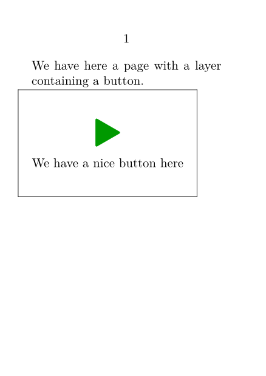

In an interactive document it is useful to be able to put buttons which do specific navigation tasks. The \button does precisely this, and it can be included in a layer which can be put anywhere on a page. Here is an example:
-
\setuppapersize[A7][A7] \setupinteraction[state=start] \setupbodyfont[10pt] \definelayer[MyButton] [width=\paperwidth,height=\paperheight] \setlayerframed[MyButton] [x=30mm,y=40mm, location={lo,hi}] [width=50mm,height=30mm, %offset=-1mm, frame=on] {\button[frame=off]{\scale[height=2em]{\symbol[navigation 1][nextpage]}}[NextPage] \endgraf We have a nice button here} \setupbackgrounds[page] [background={MyButton}] \starttext We have here a page with a layer containing a button. \page This is a second page, and here is a button to go back \button{\symbol[navigation 1][previouspage]}[PreviousPage]. \stoptext
This results in the following:
- 
Indeed, instead of \symbol one can use any other character, or even a figure with the command \externalfigure.